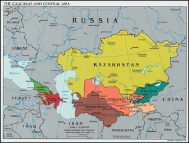

Women in the Former Soviet Republics

Introduction
The latter half of the twentieth century saw the rapid increase in the study of all aspects of women's lives, from the literature they produced to their socioeconomic status. Of particular interest in recent years has been the comparative study of women's roles in all nations of the world. This research guide focuses on the study of women since the fall of the Soviet Union in 1991 in what are now known as the Former Soviet republics, in particular the predominantly Islamic republics in Central Asia and the Caucasas. While religion was forced underground during the Soviet regime, is has since reemerged and plays a vital role in how all citizens, but especially women, are experiencing the post-Soviet transition.
There is a wealth of information available about all of the former republics, but especially those in Eastern and Central Europe, as well as information in as many languages as one might desire. However, for the student or researcher who does not possess a knowledge of these languages the task of sifting through it all to find resources that are comprehensible as well as relevant can be daunting. Therefore the purpose of this research guide is to provide English-language materials that focus primarily on how women in the former Soviet Islamic republics in Central Asia and the Caucasus are experiencing this transition.
Back to the top
Location Key
All of the items listed in this guide are available either through the Indiana University library system or online through the library's web site with a proper IU student ID and password. I have included a guide to the abbreviations included in these citations to clarify their location.
RCREFDEPT - Research Collection, Reference Department : On the 1st floor in the East Tower of the Wells Library in Bloomington.
RCSTACKS - Research Collection, Stacks : Available in the main stacks of the Wells Library.
B-BUSSPEA - Item is located in the Business-SPEA Information Commons on the Bloomington campus.
Back to the top
Browsing Areas
While a list of specific resources is a great place to start, it is often helpful to simply browse the area in which these materials are located in order to find other items that may have fallen through the cracks in one's search. The two best areas to browse in for this particular subject are:
DK - Russia. Soviet Union. Former Soviet republics
Specifically DK 293 (Russia after 1991), DK 670-699 (The Caucusus), and DK 845-949.30 (Central Asia)
HQ - The Family. Marriage. Women.
Specifically HQ 1101-2030.7: Women and feminism.
Back to the top
Library of Congress Subject Headings
Browsing according to Library of Congress subject headings can make your search much easier. Because this guide covers a vast expanse of geographical regions, there are a variety of options in subject headings one can use to look for further information:
- Asia, Central - Social Conditions - 1991-
- Asia, Central - Politics and government - 1991-
- Former Soviet republics
- Muslim women - Asia, Central - Economic conditions
- Muslim women - Asia, Central - Social conditions
- Post-communism - Former Soviet republics
- Women - Former Soviet republics
- Women - Former Soviet republics - Social conditions
- Women - Former Soviet republics - Economic conditions
It is also possible to browse for "Women - specific country", but that would involve a very long list of headings and the aim of this guide is to provide general/multicountry resources rather than focusing on one specific republic.
Back to the top
Bibliographies
Bibliographies are excellent starting points for any research project because they provide a variety of information on books and articles that have already been published on your topic.
- Zirin, Mary Fleming, June Pachuta Farris, Irina Livezeanu, and Christine Worobec. Women and gender in Central and Eastern Europe, Russia, and Eurasia: A comprehensive bibliography. Armonk, N.Y.: M.E. Sharpe, 2007. [RCREFDEPT: Z7964.E85 W66 2007]
- This provides non-annotated bibliographic information organized by country, and further organized by history, famous women, literature, and so forth. Many of the items referenced, however, are not in English.
Back to the top
Encyclopedias
Encyclopedias are also an excellent place to begin preliminary research on a topic. They provide an overview of a topic, sometimes quite detailed, and often in addition to bibliographic information for further research. I have listed only encyclopedias that contain multiple entries on women or issues related to women, so this list is more selective than comprehensive. There are also many encyclopedias, often older and more likely to be out of date, that contain entries on women's roles in the Soviet Union, but as that is not the topic of this guide I did not include them.
- Brown, Archie, Michael Kaser, and Gerald S. Smith, ed. The Cambridge encyclopedia of Russia and the former Soviet Union. New York: Cambridge University Press, 1994. [RCSTACKS: DK14 .C35 1994]
- There is one main article on women specifically (pages 450-452) but there are many other articles that pertain to women's issues (on topics like religion, family, marriage, education, and so forth) so the entire encyclopedia is worth investigating.
- Joseph, Suad, ed. The Encyclopedia of Women and Islamic Cultures. Leiden: Brill, 2007. [RCREFDEPT: HW 1170.E53 2003]
- Organized by topic and then by region, there are many entries on women's issues in Central Asia and the Caucasus.
- Lynn, Walter. The Greenwood encyclopedia of womens issues worldwide: Asia and Oceania. Westport, CT: Greenwood Press, 2003. [RCREFDEPT: HQ1467 .G74 2003]
- In the volume on Asia and Oceania, there is a chapter specifically on Central Asia with subheadings on each individual country. However, Uzbekistan instead receives its own separate chapter. Includes bibliography and further reading, and the Uzbekistan chapter includes a lengthy list of women's organizations.
- Rhyne, George N., ed. The Modern Encyclopedia of Russian, Soviet and Eurasian History. Gulf Breeze, FL: Academic International Press, 1995. [RCREFDEPT: DK14 .M689 Suppl.]
- While the supplements to this encyclopedia contain more current information, the IU Wells library does not own the entire set. Therefore the best option out of this series is Volume 55, which contains articles on Women in the Communist Party and Women Physicians.
Back to the top
Periodicals
Due to the interdisciplinary nature of this topic, there are not many journals that publish solely on this topic on a regular basis. The following periodicals have all published at least one article per year on women or women's issues in the Former Soviet republics:
- Aspasia [IngentaConnect; or RCSTACKS: HQ1590.7 .A84]
- This journal was created in 2007 specifically to provide scholarship on women in Central, Eastern and Southeastern Europe. It can be accessed through IngentaConnect through the IU website, or in the stacks.
- Sociological Research [Academic Search Premier; or RCSTACKS: HM1 .S72]
- Formerly called Soviet Sociology, this journal is concerned with sociological studies in Russia and the successor states of the Soviet Union.
- Women east-west [RCSTACKS: HQ1590.7 .A48]
- Produced by the Association for Women in Slavic Studies, this journal produces articles that deal specifically with women in the former Soviet republics. IU has a current subscription to this journal, which can be found in the Kent Cooper Room of the Wells Library, and bound volumes can be found on the 7th floor.
Back to the top
Databases
The best databases for searching for articles on this topic are all available from EBSCOhost through the IU libraries web resources portal. Not all offer full-text articles, but they all provide a good selection of articles on the topic.
Back to the top
Web Resources
The issues facing women in the former Soviet republics are too vast to viably cover in a single book or journal article. This collection of web resources (listed in alphabetical order by title) provides information on a wide range of issues, and is the only portion of the guide that provides resources on sex trafficking.
- Association for Women in Slavic Studies (AWSS)
- Contains links to an enormous variety of web resources on nearly every topic pertaining to Russia and the former Soviet Union.
- The Coalition Against Trafficking In Women
- This is a coalition web site dedicated to providing information about international trafficking in women. While the scope of this site is international, the page linked allows the user to get information about individual countries in the broader region this subject guide covers. It provides information on the methods used by traffickers, what the countries in questions have done to stop the trafficking, and cites statistics.
- EurasiaNet.org
- This web site provides news and general information on the countries in Central Asia and the Caucus. While each country has its own directory with sub-directories for many important issues, there are no sub-categories specifically for gender. However, a search for "women" or "gender" produces a plethora of results.
- Network of East-West Women (NEWW)
- A web site devoted to "supporting dialogue, informational exchange, and activism among those concerned about the status of women in Central and Eastern Europe, the Newly Independent States, and the Russian Federation."
Back to the top
Dissertations
As mentioned in the introduction to this guide, because the focus is primarily on the roles and issues facing women since the collapse of the Soviet Union in 1991/1992, scholarship is not as available as it might be for other topics. The following two dissertations discuss the issues facing women since the fall of the Soviet Union and the creation of the Commonwealth of Independent States:
- Grant, G.P. "Reproductive health in the post-Soviet state: Abortion and contraception in Estonia." PhD Diss., University of Southampton, 2007.
- Raheb, M. "The condition of women in the former Soviet Islamic republics: Why seventy years of Sovietization was unable to eradicate these republics' patriarchal social structures." PhD Diss., University of Miami, 2001.
While the next two dissertations focus more on women during the Soviet regime and are included for comparative purposes:
- Doi, M.M. "From the heart: Marginality and transformation in the lives of Uzbek National Dancers, 1929-1994." PhD Diss., Indiana University, 1997.
- Perry, M.I. "Stalin's women: Rhetoric of the painted word." University of Texas at Arlington, 2000.
Back to the top
Government Information
Some of the best statistical information on the changing role of women in these post-Soviet states can be found online through the web sites of various organizations and programs of the United Nations.
- IFAD
- This is the International Fund for Agricultural Development (through the UN) page discussing the gendered differences of the post-communist transitional economies of the CIS, with a special focus on half a dozen countries in the region that can be found through links on the right sidebar. While IFAD's primary goal is eradicating poverty, this site addresses many other issues, including women's relative political status, health issues, and wage differences.
- Regional MDGs
- This site, which needs to be viewed in Internet Explorer in order to work properly, is a depository of the statistics of indicators of how well countries in Eastern Europe, the Caucusus and Central Asia are measuring up to the UN's Millennium Development Goals. It provides useful statistical data on things like condom use as well as the percentage of women parliament members by country in the region.
- UNIFEM CIS
- This is the web site for UNIFEM's operations in the Commonwealth of Independent States. It allows you to search for UNIFEM projects in the three main areas of action (economic rights, violence against women, and politics), by country, and by status. There are also additional search options for other UN resources on different topics still pertaining to the same region.
- UN WomenWatch
- This site is a directory of UN resources on gender and women's issues specifically in the Eastern Europe and Central Asia regions. It includes information on a variety of socio-economic issues such as women's employment and relative poverty, as well as health and general issues of gender equality.
Back to the top
Books
The books in these sections were found using WorldCat, by high-ranking reviews in Choice, or by looking to see what books were cited most often in the encyclopedias and bibliographies already listed in this guide. They are included because they are owned by the most libraries, as well as being owned by the Indiana University Library System.
- Buckley, Mary. Post-Soviet women: from the Baltic to Central Asia. Cambridge: Cambridge University Press, 1997. [RCSTACKS: HQ1665.15 .P67 1997]
- Although slightly older, this is one of the most cited and most commonly owned items in this field. Many of these articles are cited in the encyclopedias and bibliographies listed in this guide.
- Corcoran-Nantes, Yvonne. Lost voices: Central Asian women confronting transition. London: Zed Books, 2005. [RCSTACKS: HQ1735.22 .C65 2005]
- In addition to being a recent and frequently-cited text, this is also the book that inspired me to create a pathfinder on this particular topic in the first place. It is recommended by Choice.
- Erturk, Korkut A. Rethinking Central Asia: non-Eurocentric Studies in History, Social Structure and Identity. Reading, UK: Ithaca Press, 1999. [RCSTACKS: DS329.4 .R48 1999]
- Gunes-Ayata, Ayse and Feride Acar, eds. Gender and Identity Construction: Women of Central Asia, The Caucasus and Turkey. Leiden: Brill, 2000. [RCSTACKS: HQ1735.22 .G45 2000]
- Kuehnast, Kathleen R., and Nechemias, Carol. Post-Soviet women encountering transition: nation building, economic survival, and civic activism. Washington, D.C.: Woodrow Wilson Center Press, 2004. [RCSTACKS: HQ1663 .P66 2004]
- Luong, Pauline Jones. The transformation of Central Asia: States and societies from Soviet rule to independence. Ithaca: Cornell University Press, 2004. [B-BUSSPEA HN670.22.A8 T73 2004]
- While not specifically entirely about women, this book includes several chapters on women and is "highly recommended" by Choice. It is owned by 412 libraries, according to WorldCat.
Back to the top
Articles
While books on this topic are able to focus more broadly on an entire region, with chapters on individual countries, most of the articles I have found are focused on one particular country. I have tried to include articles that, while about one country, have information that can be extrapolated to apply to others, as well.
- Agadjanian, Victor. "Post-Soviet Demographic Paradoxes: Ethnic Differences in Marriage and Fertility in Kazakhstan." Sociological Forum 14 (Sept. 1999): 425-446.
- Full text available online to IU students through JSTOR.
- Heyat, Farideh. "New Veiling in Azerbaijan: Gender and Globalized Islam." The European Journal of Women's Studies 15 (2008): 361-376.
- Full text available online to IU students through SAGE.
- Ishkanian, Armine. "VI: Gendered Transitions: The Impact of the Post-Soviet Transition on Women in Central Asia and the Caucasus." Perspectives on Global Development and Technology 3/4 (2003): 475-496.
Back to the top
Created by Allison Fredrickson
MLS Student at Indiana University
Page last updated 1 December 2008
Map of Caucasus and Central Asia is from the University of Texas Libraries.
Menu style from DynamicDrive.
Valid XHTML and CSS